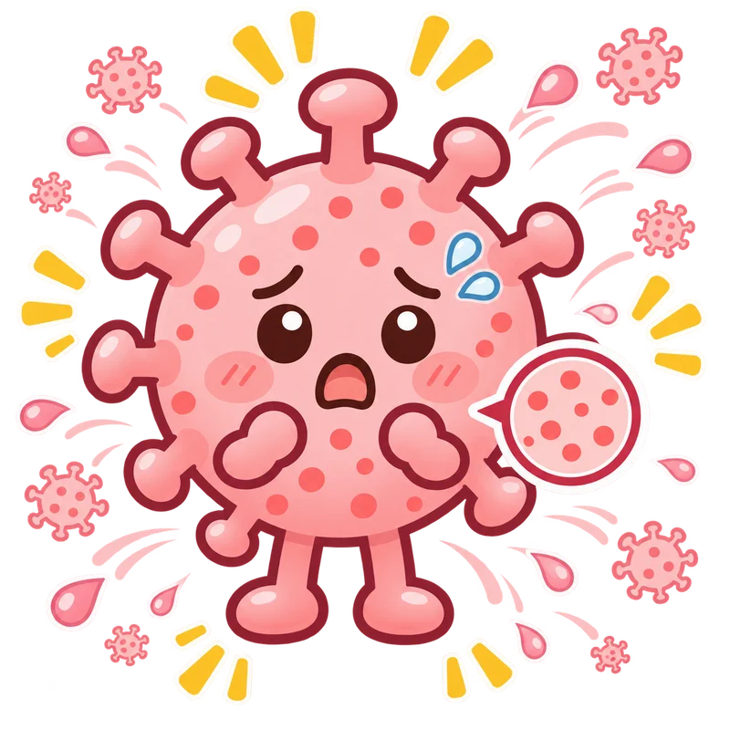

麻しん（はしか）
熱やせき、鼻水、目の充血などから始まり、その後に高い熱と全身の発疹が出ることがあります。
はしかが疑われるときは、待合室などで感染を広げないよう、受診前に医療機関へ電話してください。

どんな病原体？
麻しんウイルスが原因。発熱、せき、鼻水などに続いて発疹が現れる。感染力が非常に強い。
どうやってうつる？
感染経路の用語を確認
- 空気感染
- 病原体を含む微細な粒子が空気中に漂い、離れた場所にも広がることがある。
- 飛沫感染
- せきやくしゃみ、会話などで出る比較的大きなしぶきを介して広がる。
空気感染などで広がり、同じ空間にいるだけで感染することがある。
学校・園はいつから行ける？
- 学校・幼稚園の出席停止
- 熱が下がってから3日が過ぎるまで。
- 保育所の登園の目安
- 学校・幼稚園の欄と同じ条件が登園の目安です。